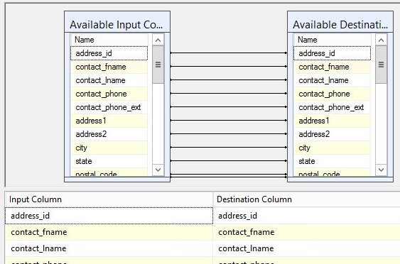
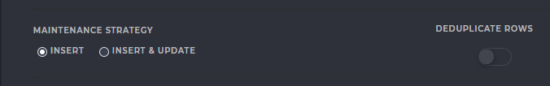
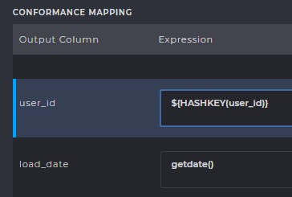
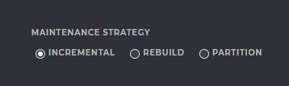
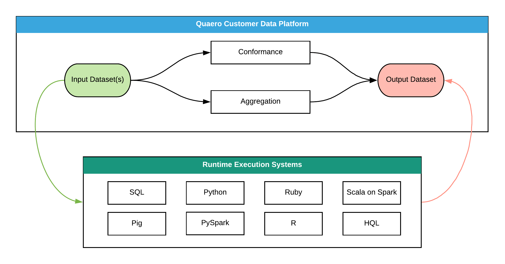
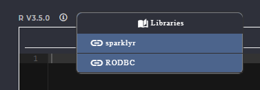
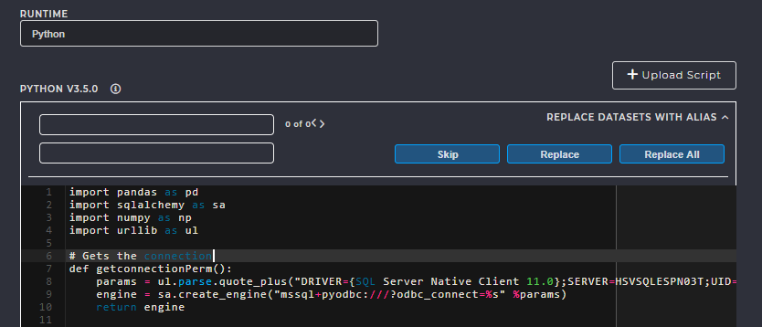
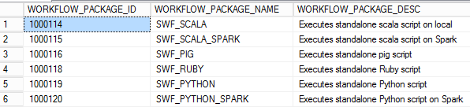
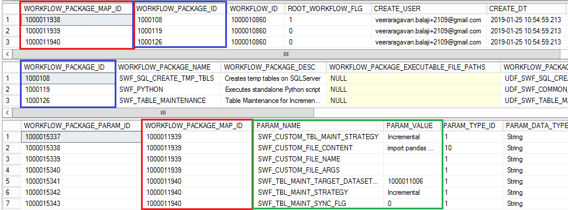
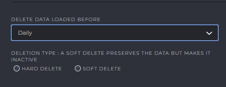

Workflows¶
Introduction¶
See also
For more information about workflow execution, see Execution Sequence
{kind=link}
PRIMARY TABLES
M_WORKFLOW , M_WORKFLOW_INSTANCE_STATUS , M_WORKFLOW_TYPE , M_WORKFLOW_INPUT , M_WORKFLOW_EXECUTION_SUBSYSTEM
Workflow Mappings¶
Every workflow takes a dataset as input and produces another dataset as output. After we create the source and destination tables, during the creation of workflows, we need to specify the source to destination column mappings similar to SSIS table mappings.
{kind=link}
TABLES INVOLVED
In the following figure, we can see that the left side :Output Column is the column name of the destination table and
the right side Expression is the SQL expression to be applied on the source column. We can use any valid aggregate
functions such as sum, count etc for Aggregate workflow and functions like cast, concat, substring for conformance workflows.
We can also use a function or variable within ${ } to evaluate it during runtime. Example, ${ROWNUM();} evaluates the row number
during run time and sets the value to the destination column. Specifying only the source column name will simply perform a 1:1
mapping from source to destination.
{kind=link}
Types of Workflows¶
The following are the different types of workflows:
Conformance Workflows¶
Front End Configuration¶
Maintenance Strategy¶
QCDP was designed to allow the creation of workflows and automate ETL operations at specified intervals. New and fresh data is constantly ingested and staged. There are a few strategies we can have, that resolves the problem of dealing with old data that is already staged and how the new data must be inserted into the existing tables. Let us discuss the few maintenance strategies available in the QCDP
{kind=link}
- DE-DUPLICATE ROWS
- This option removes any duplicate rows in the table. A row is considered duplicate if and only if there exist two or more rows where ALL column values are identical If any one of the column values are different, then the row is not identical and will not be removed. It is usually safe for this option to be turned off if primary keys are specified.
- INSERT
- When fresh data is available, selecting this option allows any new rows to be “inserted”
and appended to the end of the table. The previous data remains and so the number of rows increases.
This option requires that NO PRIMARY KEYS be set in this table. Any new data which contains rows with duplicate
column values, when inserted into a table with primary keys will violate the primary key constraint
and this option will fail the conformance workflow. We can conclude that enabling this option has the possibility
of containing duplicate rows on insertion of new data. This can be avoided by enabling
Deduplicate Rowsif necessary.
- INSERT & UPDATE
- This option allows insertion of rows with new data to the end of the table. For rows with duplicate column values, the existing row is updated instead. To make this possible, we need to MAKE SURE PRIMARY KEYS EXIST in the table so that duplicate values are updated instead of being appended at the end. If the new row is unique, it is simply appended.
ONLY FOR NERDS…
In SQL Server backend, all primary key tables are stored using Indexes.
These indexes are basically hash tables, in the form of “key-value pairs”, whose key
is derived by applying a Hash Function to the primary key. The value contains the column names of the table.
We know that hash tables are the fastest data structure with an access time of O(1) time complexity.
So, hashing a primary key allows direct insertion of data without performing a search.
Let us consider the insertion of new rows from fresh data into a table with this option enabled.
In such cases, the primary key of the new row is obtained.
We use a hashing function on this primary key, ${HASHKEY(colname_or_expression)}.
The destination table’s index is found, and the corresponding column values are updated. If the hash-key is not present in the existing table,
a new row is inserted at the end.
If composite keys are in the table, the HASHKEY function can be applied to any one of the primary keys that constitute the composite key. This is because a hash table is a two-dimensional structure with a key-value pair and requires the hashing of at-least one column in the table. During creation of workflows, we can define the mappings as shown in figure :
{kind=link}
If you fail to specify a HASHKEY function in the conformance expression, you will be greeted with the following error
Error
Executing the query “hashkey colummn required when @target_table_update…” failed with the following error: “Incorrect syntax near ‘required’.”. Possible failure reasons: Problems with the query, “ResultSet” property not set correctly, parameters not set correctly, or connection not established correctly.
TABLES INVOLVED
Tip
For a more thorough understanding of maintenance strategy, see this experiment
Aggregate Workflows¶
Front End Configuration¶
Maintenance Strategy¶
Similar to Conformance Workflow, there are a few strategies we can have, that resolves the problem of dealing with old data that is already staged and how the new data must be inserted into the existing tables. Let us discuss the few maintenance strategies available for Aggregate Workflows
{kind=link}
- INCREMENTAL
- When fresh data is available, selecting this option allows any new rows to be aggregated and appended to the end of the table. The previous data, along with the new rows are aggregated together
- REBUILD
- Every time the workflow executes, and fresh data is available, the table is truncated, and later aggregation is performed. This truncation of data followed by the aggregation is called “rebuild”
- PARTITION
Intentionally left blank due to insufficient information. Please check back later
TABLES INVOLVED
Custom Workflows¶
Front End Configuration¶
Oftentimes, there may be scenarios where complex aggregation and conformance operations may need to be performed that are tedious to do using the user interface. It may become necessary to handle such complex operations by handing off the data to a program outside the CDP Environment, performing the required operations and handing the resultant data back to CDP. We can manipulate data using several languages, including SQL, Python, SAS, R etc. We design a “Specialized Workflow” that takes a dataset as input and begins the execution of an external script (written in the above languages). This script extracts data from the CDP tables, and performs data transformations, complex aggregation and conformance. Later, the resultant data is written back to the preconfigured destination table in CDP. This specialized workflow is one of the most useful features when it comes to users or developers who might not be familiar with the languages supported by CDP and who wish to perform complex ETL operations.
We shall now look at the parts of a custom workflow and how it can be configured.
{kind=link}
- DATA CONNECTION TYPE
- Specifies the environment where the source/destination tables are present
- SOURCE & OUTPUT DATASETS
- A custom workflow can have many input datasets and a single output dataset. If more output datasets are required, it can be included within the script
- ALIAS
- Because CDP hands over the datasets or tables to a script in an external environment, the data is expose and is therefore less secure. CDP prepares an ALIAS that can be replaced within the script to refer to the actual table. An alias acts as a virtual name that allows CDP to point to the actual table without having to hard-code it within the script, thus making sure the script code stays constant, even if table names change, making a custom workflow more flexible. For every maintenance strategy, an appropriate alias is to be used.
- PRIMARY TABLE
Specifies the primary table used as a source table. Non primary tables are inner joined to the primary table This is equivalent to performing the following
select * from <primary_table> join <non_prim_1> join <non_prim_2> --and so on..
- MAINTENANCE STRATEGY
- Incremental
- When fresh data is available, selecting this option allows any new rows to be aggregated and appended to the end of the table. The previous data, along with the new rows are aggregated together
- Rebuild
- Every time the workflow executes, and fresh data is available, the table is truncated, and later aggregation is performed. This truncation of data followed by the aggregation is called “rebuild”
- Partition
Intentionally left blank due to insufficient information. Please check back later
{kind=link}
- RUNTIME
- As mentioned previously, we can handle complex aggregations and ETL operations through external scripts
that are executed when the workflow starts. Theses scripts can be in any one of these currently supported languages:
SQL, Python, Ruby, Scala on Spark, Pig, PySpark, R, HQL. This can be specified in the RUNTIME dropdown menu, but please note that you CANNOT CHANGE this once the workflow has been customized.
- CODE SCRIPT
We can prepare a script that reads data from the source tables and writes back to the destination table. In the script, you must always make sure you use only the libraries that are available in the installation environment. You can check this by hovering over the (i) information icon beside the runtime name

{kind=link}
- REPLACE WITH ALIAS
During testing purposes, you may use the actual table name and hard code it. While pasting the code during workflow creation (or alternatively uploading), you can use the Replace with Alias function to automatically substitute the table names with their alias. The alias works well when the fully qualified table name is specified
(dbname.schemaname.tblname)
{kind=link}
Caution
- It is important to place appropriate comments within the code, so its easier to debug in production during script failures.
- Please use ONLY the libraries specified, by hovering over the info icon.
- It is important to use the same version of the scripting language as specified in the user interface. Many functions may be added or deprecated in various versions, so please use non-volatile functions that are usually not bound to change during the language’s lifetime.
- DO NOT hard code the Server connection details such as server name, username, password. There are Aliases provided for these too, for use in scripts. Please see the sample code.
Info
Backend Configuration¶
We can configure custom workflow from the backend by adding entries to a number of metastore tables
Querying the following tables after creation of a custom workflow can give us useful insights and what entries are required. We’ll show only the custom workflow related entries required for each table so as to remain concise.
- M_WORKFLOW
- WORKFLOW_TYPE_ID - (13) SPECIALIZEDWORKFLOW_EXECUTION_SUBSYSTEM_ID - (4) Java Local (A local JVM installation executes the scripts)
- M_WORKFLOW_INPUT/ M_WORKFLOW_OUTPUT
- A specialized workflow may or may not have input and output datasets. This is optional, and a custom workflow can simply run or execute a script directly WITHOUT input or output datasets. To perform just the execution of scripts, simply make no entries into these tables during creation.
- M_WORKFLOW_PACKAGE
Custom workflows work by executing scripts written in one of the supported languages (Python, HQL etc..) For each language, CDP provides predefined packages that are responsible for executing the scripts. All packages can be referred in
M_WORKFLOW_PACKAGEtable by querying for the respective language.select … PACKAGE_NAME like ‘%PYTHON%’, select … PACKAGE_NAME like ‘%SPARK%’
{kind=link}
- M_WORKFLOW_PACKAGE_PARAM_MAP
- Once we’ve decided which packages are used, we must map each package to our custom workflow using the workflow ID. This is easy to do as we just do a one to many mapping from WORKFLOW_ID to PACKAGE_ID. For example, a custom workflow having WF_ID 1000010860 for executing Python script will have the mappings shown in the figure (shown at end of section).
- M_WORKFLOW_PACKAGE_PARAM
- Before executing any script, we may have to pass parameters such as variables, execution options etc similar
to how we do it in a command line or terminal. Since we’re creating a custom workflow by also specifying the code, we pass the
entire code as a parameter to the packages which are responsible for executing the code. These packages each have parameters that
it can accept as a key value pair or a parameter name and parameter value. We can find these parameters defined in this table,
M_WORKFLOW_PACKAGE_PARAM
Following are common package params:
PARAM_NAME PARAM_VALUE SWF_CUSTOM_TBL_MAINT_STRATEGY Incremental SWF_CUSTOM_FILE_CONTENT import pandas..SWF_EXEC_QUERY_SQL insert into table()SWF_EXEC_QUERY_HOST_CONNECTION_PROTOCOL OLEDB SWF_EXEC_QUERY_HOST_ID 1005xx
See the following figure to see how all the tables fit together
{kind=link}
Delete/Expiration Workflow¶
It is often necessary to delete data that is old, or which is not in use, to make room for fresh data. We can set conditions for a dataset to “expire” to perform the act of labelling data that is no longer being used. To perform expiration of a dataset, we create a Delete Workflow that executes when a certain “Expiration Condition” is met. When we set a dataset’s expiration condition, the Dataset Expiration Manager daemon job immediately drops such tables during routine cleanup
Important
EXEC USP_DELETE_WORKFLOW_CONFIG 100000xxxx, 'n' --Provide Workflow_ID
Front End Configuration¶
In the user interface, we can configure expiration by Selecting a dataset > Update
{kind=link}
Warning
Backend Configuration¶
Perform the following steps to create a delete workflow
EXEC USP_ADD_WORKFLOWto insert a record toM_WORKFLOW- Set the expiration condition to your dataset using the
DATASET_ID. The example shows the query needed to perform a daily delete. You can change thewhereclause to change the interval. - Set the expiration status ID to 5 (Expired). You can view the various statuses in
M_DATASET_INSTANCE_SATUS - Activate the delete workflow by setting the
ACTIVE_FLGto1
1 2 3 4 5 6 7 8 9 | --Set Expiration condition for Daily Delete | Available in the User Interface
declare @dataset_id bigint
set @dataset_id = 1*****231 --Insert your DATASET_ID
SELECT a.DATASET_INSTANCE_ID FROM M_TRACK_DATASET_INSTANCE a
JOIN M_DATASET_INSTANCE_STATUS b ON a.STATUS_ID=b.STATUS_ID
WHERE DATASET_ID = @dataset_id AND b.STATUS = 'READY' AND DATEDIFF(DAY,a.CREATE_DT,GETDATE())>=1
update M_TRACK_DATASET_INSTANCE set status_id = 5 where DATASET_ID = @dataset_id
|
If you wish to remove the expiration conditions and retain the data, set the expiration condition to null,
set dataset status to 2 (READY) and deactivate the delete workflow
1 2 3 4 5 6 | --Remove expiration condition
declare @dataset_id bigint
set @dataset_id = 1*****231 --Insert your DATASET_ID
update M_DATASET set expiration_condition = null, expiration_status_id = null where DATASET_ID = @dataset_id
update M_TRACK_DATASET_INSTANCE set status_id = 2 where DATASET_ID = @dataset_id
|
Metastore Tables¶
M_WORKFLOW_INSTANCE_STATUS¶
A workflow can be treated as a deterministic finite automaton (state machine) that contains a number of states that the workflow can be in, at any given time during the execution. This table contains the list of all possible statuses the workflow can be in at any point in time during execution. The following table contains the statuses and the corresponding description.
| STATUS_ID | STATUS | STATUS_DESC |
|---|---|---|
| 1 | READY | Workflow is ready to have manifest built |
| 2 | MANIFESTBUILDING | Workflow’s manifest is being built |
| 3 | MANIFESTQUEUED | Workflow’s manifest is built and is queued for processing |
| 4 | MANIFESTPROCESSING | Workflow’s manifest is being transferred to the processing location |
| 5 | EXECUTING | Workflow is currently being executed |
| 6 | COMPLETE-PENDINGCLEANUP | Workflow execution completed successfully but manifest cleaned up failed |
| 7 | COMPLETE-CLEANUPFAILED | Workflow execution completed successfully and manifest needs to be cleaned up |
| 8 | COMPLETE | Workflow execution and manifest cleanup completed successfully |
| 9 | FAILED | Workflow execution failed |
| 10 | COMPLETE-PENDINGINSPECTION | Workflow execution completed successfully but there is some question as to the validity of the results |
| 11 | FAILED-CLEANUPFAILED | Workflow execution failed and manifest cleaned up failed |
M_WORKFLOW¶
When a new workflow is created to manipulate data or perform operations, a record is added in this table for each and uniquely identifies that Workflow.
WORKFLOW_ID- It contains
Workflow_IDthat uniquely identifies each workflow. The existing convention is that all workflow IDs created manually are numbered starting from 1000000000, and all other entries less than that are WFs created automatically during environment setup and installation. These standard WFs are inbuilt usually used for operations such as identity resolution and other CDP features. CLIENT_ID- Represents which Client created the workflow
M_WORKFLOW_EXECUTION_SUBSYSTEM_ID- See M_WORKFLOW_EXECUTION_SUBSYSTEM
WOKFLOW_NAME, WORKFLOW_DESC- Name and description given to the workflow
WORKFLOW_TYPE_ID- See M_WORKFLOW_TYPE
REACTIVATE_FAILED_WORKFLOW_FLAG- If set to 1, it indicates whether the workflow must be reactivated automatically after a failure.
MAX_CONSECUTIVE_FAILED_WORKFLOW_REACTIVATIONS- Indicates the maximum number of reactivations allowed after consecutive failures.
REACTIVATE_FAILED_WORKFLOW_DELAY_SECS- The delay in seconds before a failed workflow reactivates.
ACTIVE_FLG- If set to 1, indicates if the workflow is active. It is otherwise considered to be deactivated.
DISPATCH_CONDITIONThe dispatch condition specifies on what condition the workflow must be executed. The Workflow Dispatcher Daemon Job constantly evaluates the dispatch condition and only when the condition is satisfied the workflow begins execution.
See also
For more information on Workflow Dispatcher, see Execution Sequence
M_WORKFLOW_TYPE¶
This table contains the list of all workflow types and their ID which is used during creation of a workflow.
Examples are STAGING, DOWNLOAD, EXTRACT etc. More information about each type is provided in the
WORKFLOW_TYPE_DESC attribute in this table. Every workflow type comes with a default DISPATCH_CONDITION.
M_WORKFLOW_INPUT¶
Any input that is to be provided to the Workflow before beginning the execution is provided here.
The input and output for any given workflow is always a DATASET. However, a custom workflow can be created without
any input or output, or any one of them. For example, a workflow to send a mail or notification does not require
any dataset as input, nor does it produce any output.
DATASET_SCOPE- The type of data that is being given as input to the workflow. Types include
File,DATASET,TABLEetc.
M_DATASET¶
Specifies the details of the input/output dataset for the workflow. OBJECT_TYPE attribute values can be File, Query, Table etc.
M_WORKFLOW_PACKAGE¶
During staging, workflow execution or any other operation, many pre-built packages must be executed, and the details of these packages are present in this table. If you create your own workflow package, a record is added to this table along with a unique ID. As shown in the below picture, the package ID, name, description and their installation path is provided.
M_WORKFLOW_PACKAGE_PARAM¶
All the parameters required for the execution of the workflow packages are recorded here for each package.
They’re uniquely identified with WORKFLOW_PACKAGE_PARAM_ID and WORKFLOW_PACKAGE_MAP_ID.
M_WORKFLOW_PACKAGE_PARAM_MAP¶
This table provides the mapping that binds the three workflow tables,
namely M_WORKFLOW_PACKAGE_PARAM, M_WORKFLOW_PACKAGE`, and ``M_WORKFLOW
M_WORKFLOW_EXECUTION_SUBSYSTEM¶
This table contains all details about where the execution of the workflows takes place in the environment.
For example, if you wish to execute SSIS packages (WORKFLOW_EXECUTOR_TYPE) then it is done using SQL Server
(which will be the WORKFLOW_EXECUTION_SUBSYSTEM_NAME). So, in the front end, during creation of a workflow when one of
the options is selected, the corresponding WORKFLOW_EXECUTION_SUBSYSTEM_ID is added to the table M_WORKFLOW.
See also
For more information on Workflow Execution Subsystem, see Execution Sequence
M_TABLE_CONFORMANCE¶
When Conformance Workflow is created an entry is made to this table. It contains the Conformance workflow ID, input dataset and a unique output DATASET_ID is created.
M_TABLE_CONFORMANCE_MAP¶
During one to one transformations (conformance), this table provides the column mappings from source table to the destination table.
SOURCE_COLUMN_EXPRESSION- This column accepts an expression that represents what operation/transformation is performed on the source column.For example, if we wish to concatenate first and last names, then the expression will be
concat(FirstName,LastName)and destination column name will beFull NameAll SQL built-in functions are valid expressions. Other operations include,cast,substring,``upper``,``lower`` etc. TARGET_COLUMN_NAME- Specifies the column name in the destination table where the mapping from source column takes place during conformance.
M_TABLE_AGGREGATION¶
When Aggregation Workflow is created, an entry is made to this table.
It contains the aggregate workflow ID, input dataset and a unique AGGREGATE_DATASET_ID is created.
AGGREGATE_MAINTENANCE_STRATEGY- It is a load strategy and indicates whether the dataset load will be incremental (insert new records) or rebuild (full truncate and load).
FILTER_EXPRESSION- Filter_Expression column is to add filter to the aggregation query. For eg. you want to select a subset of data from source table in case of a rebuild aggregate WF then you can add filter expression
TO_DATE(PAGE_VIEW_DATE_TIME) < DATE_SUB(TO_DATE(FROM_UNIXTIME(UNIX_TIMESTAMP())),395)
M_TABLE_AGGREGATION_MAP¶
During aggregation, this table provides the column mappings from source table to the destination table. This table is linked to the TABLE_AGGREGATION_ID column of the M_TABLE_AGGREGATION table
See also
See also Workflow Mappings
SOURCE_COLUMN_EXPRESSION- This column accepts an expression that represents what aggregation is performed on the source column.For example, if we find the sum of all salaries in a column, then the expression will be
sum(SALARY)All SQL aggregation functions are valid expressions. TARGET_COLUMN_NAME- Specifies the column name in the destination table where the mapping from source column takes place during aggregation.